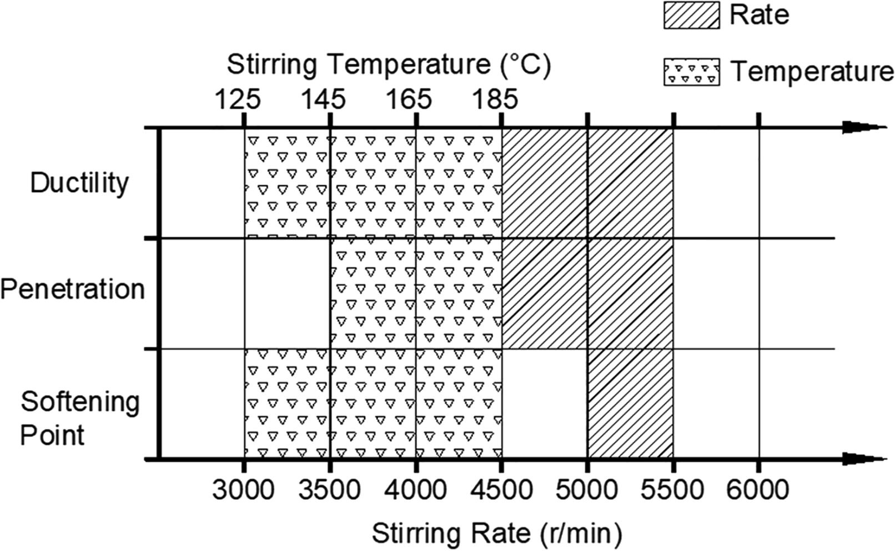
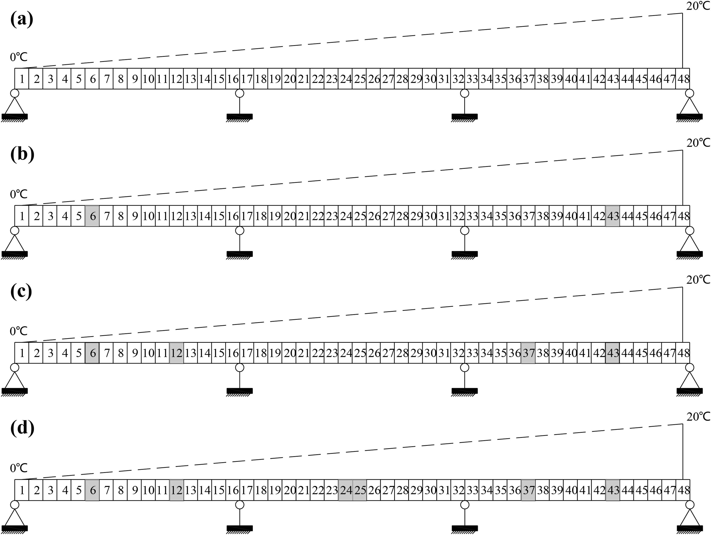
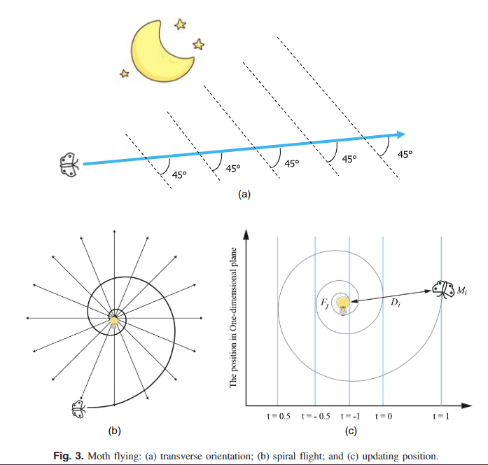
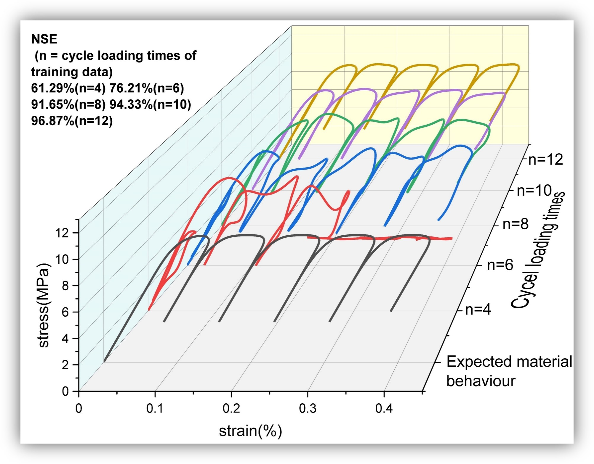

I am a Ph.D. candidate in University of Liverpool with Dr. XueZhang and Prof. Kristian Krabbenhoft.
Prior to my Ph.D. program, I was working on civil engineering materials supervised by Prof. Xiaodi Hu and Assoc. Prof. Pan Pan at Wuhan Institute of Technology.
My research interests include Neural Networks, Deep Learning, Pavement Engineering, Pavement Materials and Structural Health Monitoring. I am eagerly in applying Reccurent Neural Networks to the feild of engineering, like history-dependent materials conctitutive models.
Contact:
Email: shelvan@liverpool.ac.uk
Office: Brodie Tower, Brownlow St., Liverpool, L69 3GL
Profiles:
Publications
Publications on Journals
|  |
1. Establishment of some parametric criteria for standardizing the stirring and blending conditions of using RPAF as an asphalt-binder modifier
Xifan Li,
Xiaodi Hu,
Pan Pan,
Luis Fuentes,
Lubinda F. Walubita
Construction & Building Materials (CBM), 2021
Parametric conditions assessed included stirring temperature, rate, and time.
|
{kind=link}
|  |
2. Structural damage identification based on modal frequency strain energy assurance criterion and flexibility using enhanced Moth-Flame optimization
Minshui Huang,
Xifan Li,
Yongzhi Lei,
Jianfeng Gu
Structures, Volume 28, December 2020
A damage identification framework based on modal frequency strain energy assurance criterion (MFSEAC), modal flexibility and enhanced moth-flame optimization is presented.
|
|  |
3. Damage Identification of Bridge Structures Considering Temperature Variations-Based SVM and MFO
Minshui Huang,
Yongzhi Lei,
Xifan Li,
Jianfeng Gu
Journal of Aerospace Engineering, Volume 34, Issue 2, 1 March 2021
A novel method based on the support vector machine (SVM) and moth-flame optimization (MFO) is proposed to identify the damage of structures considering temperature variations.
|

|
4. Structural Damage Identification Based on l1 Regularization and Bare Bones Particle Swarm Optimization with Double Jump Strategy
Minshui Huang,
Yongzhi Lei,
Xifan Li
Mathematical Problems in Engineering, Volume 2019, Article ID 5954104
This paper aims to propose a novel optimization algorithm which is named as bare bones particle swarm optimization with double jump (BBPSODJ) for finding a new solution to the SDI problem in SHM field.
|
Publications on Conference
|  |
1. Estimation of RNN-based constitutive modelling of history-dependent materials
Xifan Li,
Xue Zhang,
Youkou Dong
UK Association for Computational Mechanics, April 2022
Estimation of RNNs on training surrogate models for classical history-dependent materials is carried out. Focuses are placed on their capability in describing the loading and unloading processes.
|